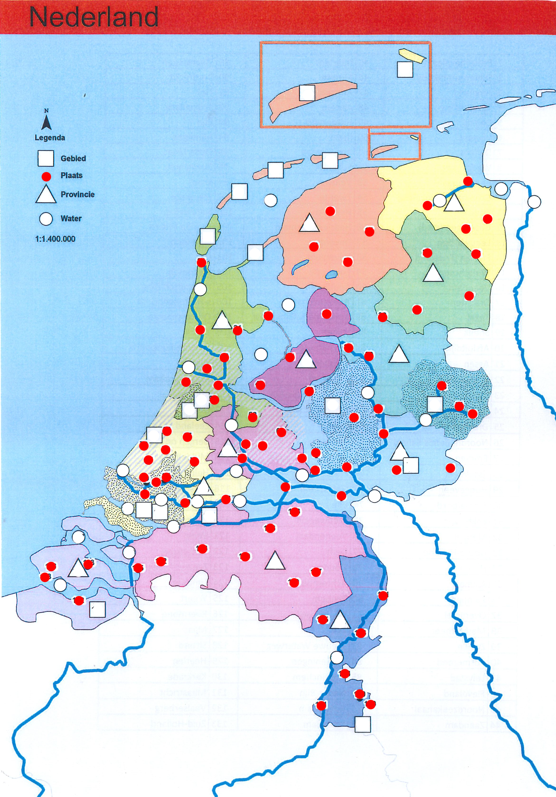

Beheer de punten in Instellingen, leer de kaart, oefen met een lege kaart en bekijk de statistieken.
volgen
Antwoord
Klik op een punt om het nummer en de plaatsnaam te zien.
Filter op categorie
Deze pagina toont de opgeslagen punten in Instellingen.

Oefensessie
Klik op Start oefensessie om te beginnen.
50%
Filter op categorie
Voortgang
Aantal vragen: 0
Geantwoord: 0
Goed: 0
Fout: 0
Resterend: 0
Statistieken per plaats
#
Plaats
Goed
Fout
Score
Oefensessies
Datum
Gevraagd
Goed
Fout
Score
Antwoorden
Instellingen
Klik met je muis op een getal op de kaart. Vul vervolgens hieronder het nummer in waar je op geklikt hebt. Vink de juiste provincie aan of rivieren of gebieden, zodat het punt bij het juiste onderdeel wordt opgeslagen en klik op punt opslaan.
Klik op de kaart om een locatie te kiezen.
Provincie
Categorieën
Opgeslagen punten worden gebruikt in de leer- en oefenpagina. Je kunt ieder punt afzonderlijk verwijderen als je een foutje hebt gemaakt.